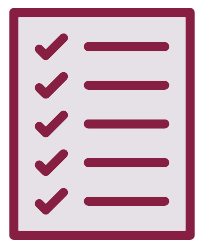

Goals
- Analyze the rhetorical situation and determine the appropriate audience or users of written communication, considering the needs of global audiences and people with disabilities. [CLO 1]
- Use conventions of various workplace genres, such as proposals, instructions, correspondence, reports, and slide decks, with understanding of how the genre conventions can be used as heuristics and as principles of arrangement. [CLO 4]
- Apply principles of effective visual design for print and electronic presentation, including hierarchical, chronological, and spatial arrangements. [CLO 6]
- Identify and apply the principles of effective style in the composing of usable, reader-centered written communications. [CLO 7]
The Task
What I Want You to Do
Use the guidelines for use of images in this activity to evaluate (and if necessary, revise) the use of images in your project.
Why I Want You to Do It
Aenean ultricies mi vitae est. Mauris placerat eleifend leo. Quisque sit amet est et sapien ullamcorper pharetra. Vestibulum erat wisi, condimentum sed, commodo vitae, ornare sit amet, wisi. Aenean fermentum, elit eget tincidunt condimentum, eros ipsum rutrum orci, sagittis tempus lacus enim ac dui.
How You Do It
-
Instructions: Use the slides on the Use of Images Self-Review page (or visit the slides in Google Docs (Links to an external site.)) to review your rough draft.
Keep running notes on what you have changed or things that you feel do not apply to your project. Summarize your changes in your response below. Your notes can be informal. A jotted list is fine as well.
This Self-Review partially replaces the Feedback Discussions. Claim the points for your work when you complete the Week of 10/05 Self-Assessment.
- Open your draft in the appropriate software, OR print your draft if possible. The software depends upon the project format you are working with. For example, if it’s a document, you would use a word processor. If it’s a presentation, you’d choose the slideshow program you used.
- Move through the slides, and check your draft:
 STOP on each slide.
STOP on each slide. - Read the advice on the slide.
- Apply the advice to your draft, if necessary.
- Move to the next slide.
- Repeat Step 3 until you apply all the slides to your draft.
- Pellentesque habitant morbi tristique senectus et netus et malesuada fames ac turpis egestas.
- Vestibulum tortor quam, feugiat vitae, ultricies eget, tempor sit amet, ante.
Obtaining the Points for Your Work
-
You track and grade your own work in this course. Be sure to complete the following tasks:
- Track your work in your Weekly Work Log.
- Post your first version in Discussions in Canvas with a specific question, for this week’s xxx.
- Claim points for sharing your first version when you complete the weekly self-assessment in Canvas.